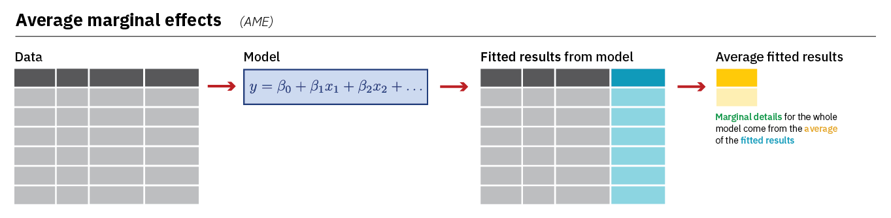
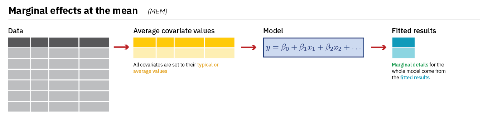

#Packages
library(rio) #laden van data
library(tidyverse) #data manipulatie en grafieken
library(marginaleffects) #voorspelde waarden en marginale effecten berekenen
#Data
ESS9NL <- import("ESS9e03, Netherlands.sav")10 Marginale Effecten
In het vorige hoofdstuk leerden we een logistisch regressiemodel schatten en interpreteren met behulp van de coëeificiënten en odds ratios. Beide zijn echter niet erg intuïtief. Wat we vaak echt willen weten is hoeveel de kans op Y=1 verandert als de onafhankelijke variabele met 1 eenheid stijgt. We kunnen naar de marginale effecten van onze onafhankelijke variabelen kijken om iets te zeggen over de verandering in de probabiliteit dat Y=1. We gebruiken hiervoor functies uit het marginaleffects package.
We gebruiken volgende packages en data:
10.1 Data Management, voorbeeldmodel, en problemen met factorize()
We maken gebruiken van eenzelfde model dat we gebruikt hebben in vorig hoofdstuk. Daarin voorspelden we stemmen op basis van gender, leeftijd, vertouwen in politici en linsk-rechtsideologie. We herhalen eerst een paar data management stappen:
#Data Preparation
ESS9NL <- ESS9NL |>
#Factor maken van categorische variabelen
mutate(gndr = factorize(gndr),
vote = factorize(vote)) |>
#Not Eligible op missing zetten
mutate(vote = na_if(vote,"Not eligible to vote")) |>
#Relevel van variabelen
mutate(vote = relevel(vote, "No"),
gndr = relevel(gndr, "Female"))
#Het model
Vote_model_mp <- glm(vote ~ gndr + agea + trstplt + lrscale,
data = ESS9NL, family = "binomial")
#Resultaten printen
summary(Vote_model_mp)- 1
-
We zouden ook deze 3
mutate()stappen in 1 stap kunnen combineren.
Call:
glm(formula = vote ~ gndr + agea + trstplt + lrscale, family = "binomial",
data = ESS9NL)
Coefficients:
Estimate Std. Error z value Pr(>|z|)
(Intercept) -0.284194 0.380455 -0.747 0.455
gndrMale 0.043281 0.154201 0.281 0.779
agea 0.018349 0.004503 4.075 4.61e-05 ***
trstplt 0.195020 0.038706 5.039 4.69e-07 ***
lrscale 0.029257 0.039306 0.744 0.457
---
Signif. codes: 0 '***' 0.001 '**' 0.01 '*' 0.05 '.' 0.1 ' ' 1
(Dispersion parameter for binomial family taken to be 1)
Null deviance: 1173.9 on 1424 degrees of freedom
Residual deviance: 1135.3 on 1420 degrees of freedom
(248 observations deleted due to missingness)
AIC: 1145.3
Number of Fisher Scoring iterations: 4Het marginaleffectspackage is niet volledig compatibel met de factorize functie die we hierboven hebben gebruikt voor gender. Laten we even kijken naar de gndrvariabele:
levels(ESS9NL$gndr)[1] "Female" "Male" "No answer"table(ESS9NL$gndr)
Female Male No answer
840 833 0 Er zijn 3 niveaus of levels voor gndr: “Female”, “Male”, en “No Answer”. Er vallen echter 0 respondente onder “No Answer”. In dergelijke situaties zal onderstaande functie een error geven omdat de functie zoekt naar een derde niveau dat er niet is.
Om dit te voorkomen kunnen we gebruik maken va de droplevels() functie om lege niveaus te verwijderen. Of we gebruiken factor() om gndr een factor variabele te maken. Zie. Paragraaf A.4 in de Veelvoorkomende Fouten Appendix voor meer informatie.
#Drop levels: verwijderen van categorieën zonder observaties
ESS9NL <- ESS9NL |>
mutate(gndr = droplevels(gndr))
#Checken van syntax
levels(ESS9NL$gndr)[1] "Female" "Male" table(ESS9NL$gndr)
Female Male
840 833 10.2 Gemiddelde Marginale Effecten (AME)
De eerste soort marginale effecten die we bekijken zijn de gemiddelde marginale effecten: de Average Marginal Effect (AME). We gebruiken hiervoor de avg_slopes() functie uit marginaleffects. De AME geeft de gemiddelde verandering in probabiliteit dat Y=1 weer (in termen van percentpunten) als de onafhankelijke met 1 eenheid omhoog gaat (dy/dx). We bereken het marginale effect voor elke observatie en elke variabele in het model en nemen dan het gemiddelde per variabele. Deze figuur beschrijft het proces (uit Heiss (2022)):

Laten we kijken naar de AMEs van ons model:
#Schatten van AMEs obv model
AME <- avg_slopes(Vote_model_mp,
conf_level = 0.95)De syntax lees je zo
AME <- avg_slopes(Vote_model_mp,-
We gebruiken de functie avg_slopes op het model tussen haakjes. De resultaten slaan we op in een nieuw data object (AME).
conf_level = 0.95)-
Standaard wordt een betrouwbaarheidsniveau van 95% gebruikt, dus deze code kan weggelaten worden als dit het gewenste niveau is. Met de code kun je het niveau ook veranderen (bv. 0.99).
Dit is de output:
tibble(AME)- 1
-
We zouden
AMEkunne typen eerder dantibble(AME)maar dit geeft andere kolomnamen. We gebruikentibble()om de kolomnamen te zien zoals ze ook in de dataset zijn opgeslagen. Zie de waarschuwing hiervover in Hoofdstuk 5 Hoofdstuk 5.
# A tibble: 4 × 12
term contrast estimate std.error statistic p.value s.value conf.low conf.high
<chr> <chr> <dbl> <dbl> <dbl> <dbl> <dbl> <dbl> <dbl>
1 agea mean(dY… 0.00220 0.000538 4.08 4.47e-5 14.4 0.00114 0.00325
2 gndr mean(Ma… 0.00518 0.0185 0.281 7.79e-1 0.360 -0.0310 0.0414
3 lrsc… mean(dY… 0.00350 0.00470 0.744 4.57e-1 1.13 -0.00571 0.0127
4 trst… mean(dY… 0.0233 0.00460 5.07 3.92e-7 21.3 0.0143 0.0323
# ℹ 3 more variables: predicted_lo <dbl>, predicted_hi <dbl>, predicted <dbl>
Output uitleg
term: bevat de namen van de variabelen (bv.,agea,gndr, etc.).contrast: Het ‘contrast’ duidt aan welke vergelijking gemaakt wordt: 1 eenheid toename voor continue variabelen, een verandering van categorie voor factor variabelen.estimate: De AMEstd.errort.e.m.conf.high: Informatie over de onzekerheid van de schatting.
Interpretatie
De gemiddelde marginale effecten (AMEs) geven weer wat de gemiddelde verandering is in de probabiliteit dat Y=1 (in percentpunten) als X met 1 eenheid stijgt. De percentpunten verkrijg je door de AME schatting te vermenigvuldigen met 100. Bijvoorbeeld:
- De kans om te stemmen is gemiddeld 0.5 percentpunten hoger voor een mannelijke respondent dan voor een vrouwelijke respondent.
- De kans om te stemmen stijgt gemiddeld met 2.3 percentpunten met elke eenheid dat respondenten meer vertrouwen hebben in politici.
10.3 Effecten op gemiddelde waarden van de predictors (MEM)
We raden aan om AME te gebruiken als je marginale effecten op basis van een logistische regressie interpreteert. Echter zie je ook soms onderzoek waarin men gebruik maakt van “effecten op gemiddelde waarden”: “marginal effect at the mean” of MEM. Daarmee berekenen we het effect op de probabiliteit dat Y=1 wanneer predictors hun gemiddelde waarden aannemen, of de modus bij categorische variabelen. Deze figuur beschrijft de berekening (uit Heiss (2022)):
Heiss, Andrew. 2022. ‘Marginalia: A Guide to Figuring Out What the Heck Marginal Effects, Marginal Slopes, Average Marginal Effects, Marginal Effects at the Mean, and All These Other Marginal Things Are’. 20 mei 2022. https://doi.org/10.59350/40xaj-4e562.

De syntax wordt licht aangepast voor de MEM;
MEM <- slopes(Vote_model_mp,
conf_level = 0.95,
newdata = datagrid()
)newdata = datagrid()-
We maken een nieuwe dataset voor de berekening waarin alle onafhankelijke variabelen op hun gemiddelde of modus worden gehouden.
Laten we kijken naar de resultaten:
tibble(MEM)# A tibble: 4 × 18
rowid term contrast estimate std.error statistic p.value s.value conf.low
<int> <chr> <chr> <dbl> <dbl> <dbl> <dbl> <dbl> <dbl>
1 1 agea dY/dX 0.00210 0.000519 4.05 5.07e-5 14.3 0.00109
2 1 gndr Male - Fe… 0.00504 0.0180 0.281 7.79e-1 0.360 -0.0302
3 1 lrscale dY/dX 0.00336 0.00453 0.742 4.58e-1 1.13 -0.00551
4 1 trstplt dY/dX 0.0224 0.00447 5.00 5.67e-7 20.8 0.0136
# ℹ 9 more variables: conf.high <dbl>, predicted_lo <dbl>, predicted_hi <dbl>,
# predicted <dbl>, gndr <fct>, agea <dbl>, trstplt <dbl>, lrscale <dbl>,
# vote <fct>Behalve estimate, standaardfout, test statistiek, p-waarde, en onder- en bovengrens van de betrouwbaarheidsintervallen, bevat de MEM dataset ook de gemiddelden en/of modus waarden voor de predictoren.
MEM |>
select(gndr, agea, trstplt, lrscale) |>
as_tibble()# A tibble: 4 × 4
gndr agea trstplt lrscale
<fct> <dbl> <dbl> <dbl>
1 Male 50.7 5.34 5.15
2 Male 50.7 5.34 5.15
3 Male 50.7 5.34 5.15
4 Male 50.7 5.34 5.15
Interpretatie
De interpretatie van MEMs is gelijkaardig aan die van AME: Welke gemiddelde verandering in de kans dat Y=1 verwachten we als X 1 eenheid stijgt? Vermenigvuldigen met 100 leidt tot een interpretatie in termen van percentpunten. De gemiddelde verandering is nu wel berekend wanneer onafhankelijke variabelen hun gemiddelde waarden aannemen. Dit moet gerapporteerd worden. Bijvoorbeeld: mannelijke respondenten hebben een 0.5 percentpunten hogere kans om te stemmen dan vrouwelijke respondenten, als leeftijd, ideologie, en vertrouwen in politici constant worden gehouden op hun gemiddelde waarde.